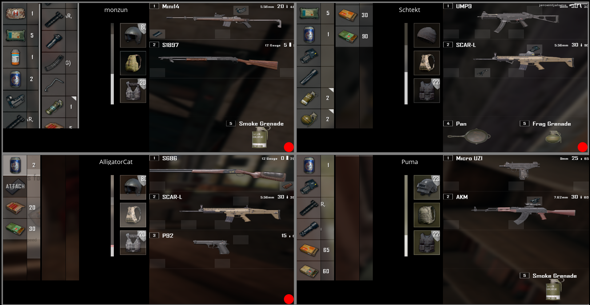

Introduction

This is what Mirage currently looks like.It's in Alpha right now and the only supported game is PUBG as I'm using that as a test case. For beta I will however implement a system that allows users (Like you! :D) to create their own setups that works for other games and programs.
Download
--- DO NOT DOWNLOAD MIRAGE FROM ANY OTHER SOURCE ---
(To avoid malicious repacks)
FAQ
Currenty Yes.
This is because I use PUBG as a test app. Once Mirage enters beta it will be possible to configure it to use any clipping/position rectangles so that it can be used as a generic clipped screenshot sharing program.
Most likely not.
Mirage only uses a little bit of CPU and memory while processing an image. It does however currently consume a significant amount of bandwidth.
False positive heuristics hit.
Many third party anti virus programs (AVG, Avast, etc) use heuristics (algorithmic guesswork) to identify unknown programs that behave suspiciously. For Mirage; they detect that it is taking background input and also opening network sockets and likely (falsely) flags it as a keylogger.
Anti virus has falsely flagged it as malicious.
Battleye does not allow suspected malicious programs to run alongside the game.
You are running the game in fullscreen.
Games running in fullscreen cannot be captured via the OS interface. I will try to implement support for fullscreen applications after 1.0 but this requires som hacking that anti cheat engines (like BattlEye) probably approve of.
No.
Mirage only stores the config and log files and the data is not sent to any centralized server.
For your safety.
Since Mirage has issues with anti virus program heuristics; many users will likely just dismiss the warnings. If someone were to make a fake version of Mirage that is actually malicious and distribute it; user would likely just dismiss the warnings for that version as well and POOF! Your computer is now a bitcoin miner.
Maybe.
Have a look at the issue tracker and see if there’s anything tagged with “Help wanted”.
Using the issue tracker.
Use the “Suggestion” label.
Controls
Mirage takes input while in the background and has no knowledge about the captured software. It just captures the screen regardless of what program currently has focus.
-----------------------------------------------------------------------------------------------------
Grave(Above tab; left of number row 1)
Synchronizes a full screenshot. (Only works if Mirage doesn't have focus)
Tab
Synchronizes a split screenshot every other time it is pressed. (Only works if Mirage doesn't have focus)
This may reverse the screenshot cycle if used outside of the captured software
Angled brackets (Left of Z; right of Shift)
Primes split screenshot cycle. (It may become reversed)
Grave(Above tab; left of number row 1)
Opens/closes dev console. (Only works if Mirage has focus)
Changelog
Reworked background input to use RawInput instead of windows hooks(Reduces issues with false positive anti virus alerts)
Added Update button to main menu
Added randomize name button to main menu
Mirage window will now be created at the position it was last closed
Minor adjustments to the test app layout
Fixed split screenshots rendering on top of player border
Fixed prime indicator being rendered behind the screenshot images
Fixed a crash that would occur if the program was closed while a connection attempt was in progress
Corrected faulty version number
Text input now only accepts ASCII characters; this avoids issues with text input and rendering
Config keys and values are now stored in their original casing
Fixed issue causing the last character of a remote log message to be repeatedly put into the remote log once each frame
Fixed issue causing the dev console to cut off output after 1024 characters
Fixed an issue causing console command output to be displayed twice
Fixed test app item counter not displaying the third digit when there was a scrollbar
Fixed test app inventory display not showing the last item in the inventory (Inventory layout was changed in test app)
Fixed test app gear slots display being incorrectly clipped (Gear slot layout was changed in test app)
Added main menu
Added user names (stored in config)
Added about page
Added links to devblog, controls list and bug reporting
Added license files
Added indicator to show if each player has primed their split(tab) screenshot
Added default image for players
Added remote sharing of client logs with host (default off; settable by host in config)
Updated visuals of session screen
Made screenshot and dev console input aware of window focus
Replaced cmd with in-app dev console (opened/closed on grave key)
The IP and port of the last successful connection will now be saved and restored on startup
Listening port for hosts can now be set in the config file
Split(tab) screenshot is now also taken by the i-key since the test app uses that as default seconday inventory key
Fixed several keyboard keys throwing warnings when pressed
Fixed several minor memory leaks
Fixed a bug causing all screenshots to fail after the user had left a session and then hosted/connected another session
Split screenshot into smaller parts and created a layout for them in order to increase visibility and readability
A cycled screenshot will no longer be taken when using the alt+ tab key combination
Changed the key for priming the cycled screenshots to angled brackets (Left of Z; right of Shift)
Added functionality for disconnecting a specific player
Added “Prime” command to CLI so that any user can prime any other users cycled screenshots
Fixed a bug where a faulty cycled screenshot could be taken if tab was pressed more than two times before the screenshot could be taken
Fixed a memory leak that would occur if a split screenshot failed
Added disconnection handling
Added protection against mistimed screenshots
Added disconnect and quit CLI commands
Moved image handling to its own thread in order to avoid stalls
Newly connected clients will now always receive the images of all relayed clients
CLI command input is now case insensitive
Fixed a crash that would occur if an invalid IPv4 address was supplied to the connect command
Minimal viable product version. Can be used to synchronize screenshots between four clients.
Roadmap
Bugfixes + Code cleanup + Technical debt repayment
Make clipping rect definable from file
Make input keys definable from file
Make screenshot timer definable from file
Make which screen to screenshot selectable via UI
Add controls list command
Update PUBG clipping rects
Add setup selection list to main menu
Create per player UI button/info row in main screen
Add pause button to per player UI
Add button mouseover and click effects
Add ignore list for keys combined with the split image key
1.0 (Full)
Bugfixes + Code cleanup + Technical debt repayment
Add donation button
Add MEngine button
Add Tubes button
Add proper controls screen (Setup + bindable keys)
Optimize bandwidth usage
1.0+
Bugfixes + Code cleanup + Technical debt repayment
Attempt fullscreen screenshots
Make application size scalable
Optimize bandwidth usage
Add secondary window options (Test using PUBG map)
Button / command to save screenshot to file
Linux support
Localization support (non unicode dependent languages)